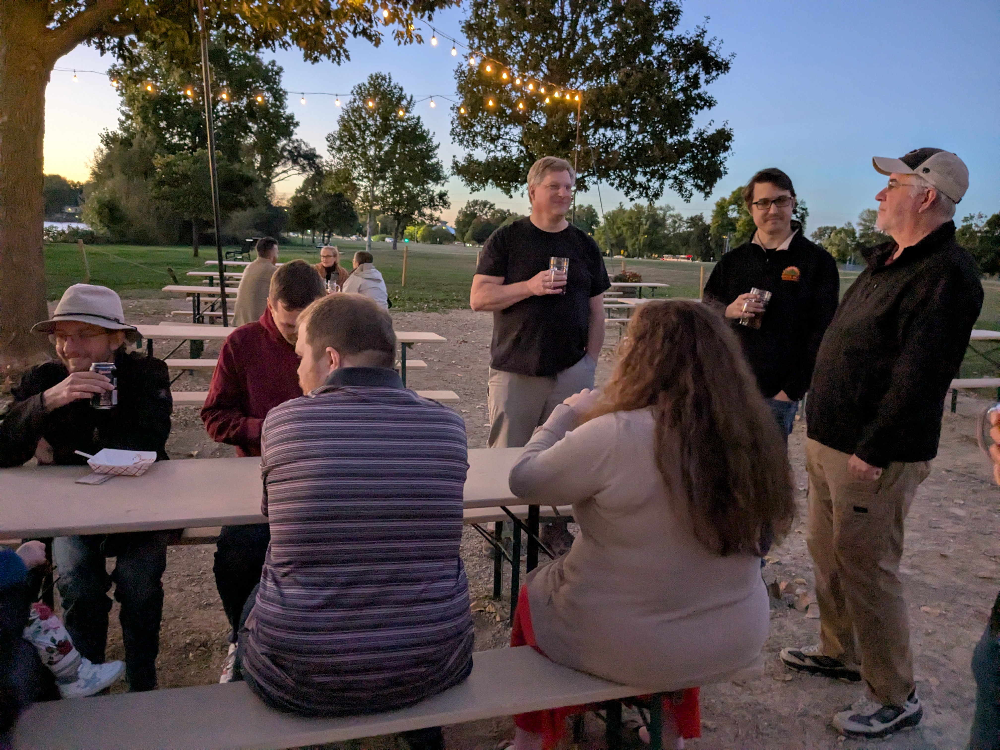
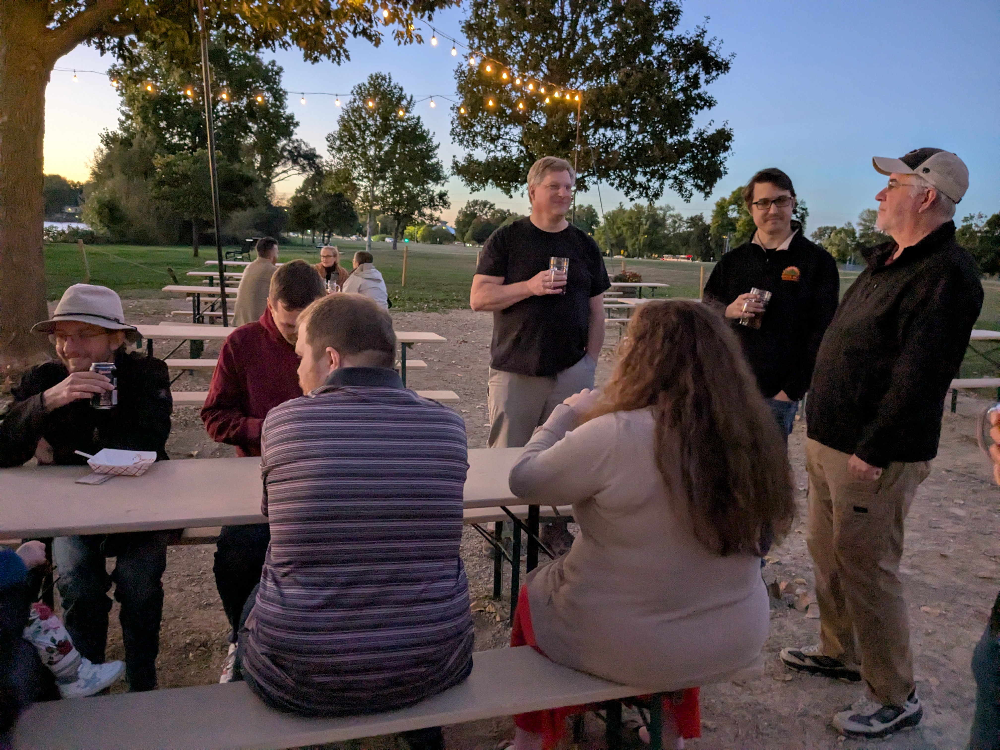

MadPy Social: Olbrich Biergarten
 

The Madison Python meetup group is hosting a social gathering at the Biergarten in Olbrich Park. We won't have a speaker or slides. Just friendly conversation. Whether you're an experienced software developer, someone interested to learn about the field, or just looking to meet new people, please join us as we enjoy one last outdoor get-together of the season.
Olbrich Biergarten has beverages (both with & without alcohol), bar snacks, and a beautiful view of the lake. To find us, look for Ed at one of the picnic tables. In case the Biergarten is closed (eg., for rain), we'll relocate to the Muskellounge — 4102 Monona Dr.
How To Get There
- Parking: Olbrich Park has parking on-site
- Transit: Metro transit offers nearby bus stops for routes C and 38
- Bike: Olbrich Park is along the Monona Lake Loop